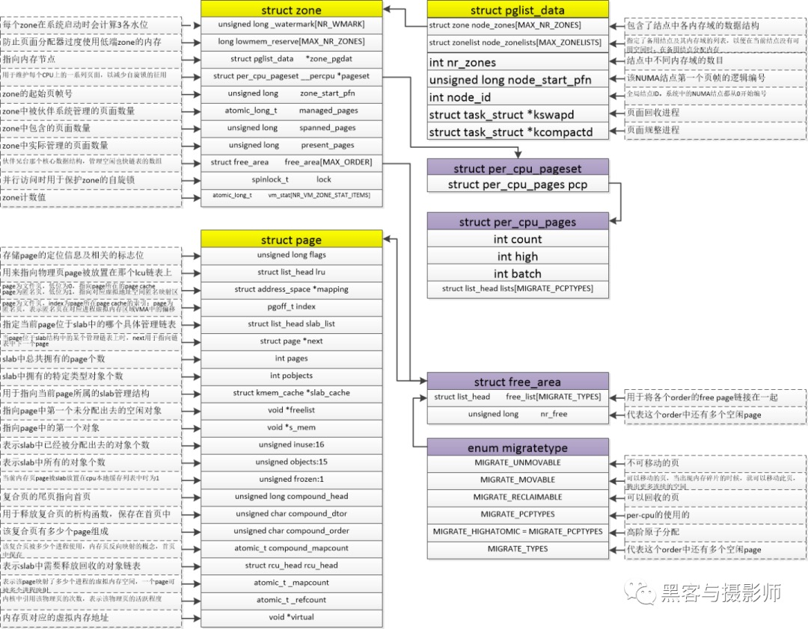
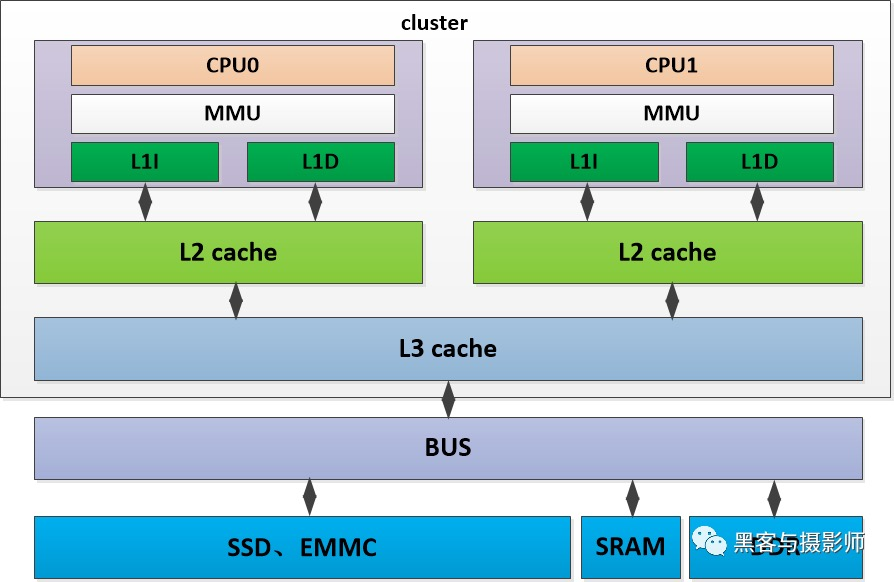
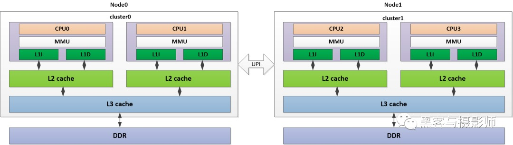
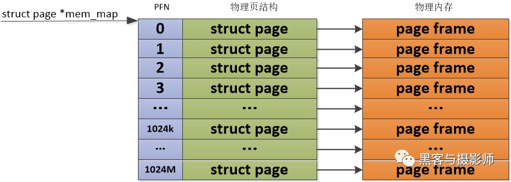
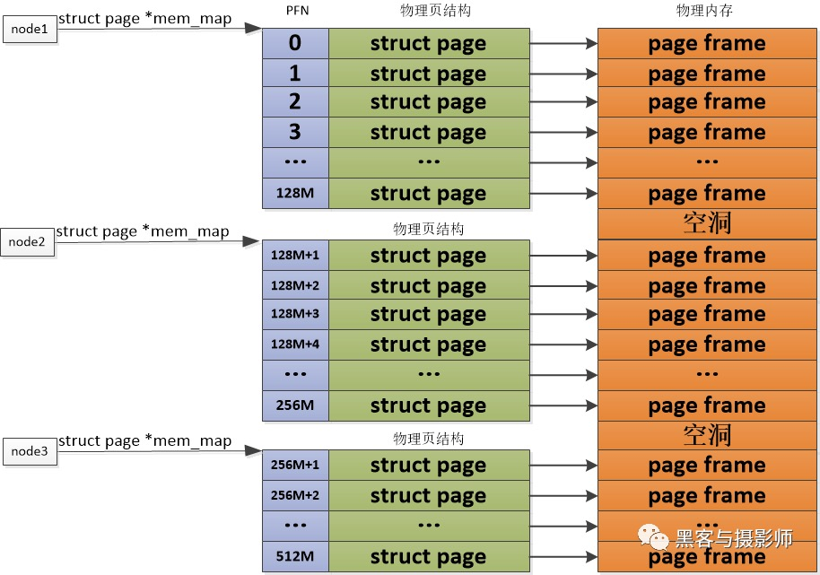
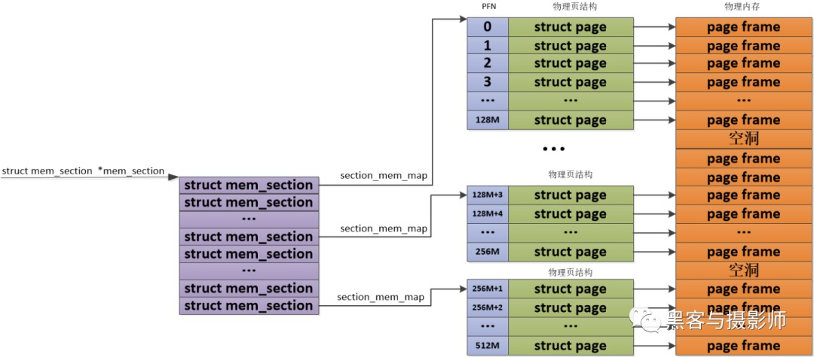
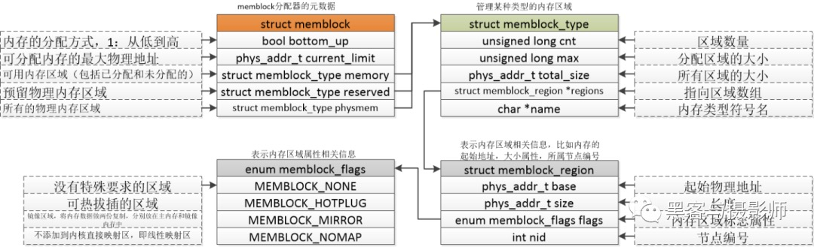
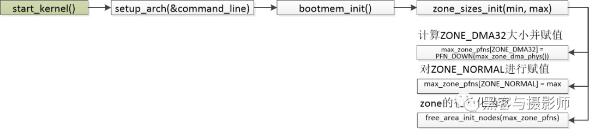

概述
- 本篇总结 Linux 内核对于物理内存的管理
- 从内核角度其实可以把物理内存想象为物理硬盘的管理模式, 都是往相应寄存器发送管理指令, 然后以
页帧为最小单位进行读取/写入数据. 为啥呢? 因为可以简单理解为内存就是一块速度超快的硬盘. - 另外,我们可以把物理内存简单地看成一个大的数组，其中每个字节都可以通过物理地址进行访问。
一 CPU 访问物理内存的全过程
- CPU 写物理内存的过程：
CPU 先给出要写入数据的物理地址对应的虚拟地址，通过 MMU 转化为物理地址，若 cache 中没有命中，则将要写入数据的物理地址放到系统总线上。DDR 的控制器感受到总线上的地址信号以及写控制信号，将物理地址从总线上读出来，并等待数据的到达。CPU 将数据发送到系统总线上，DDR 控制器感受到总线上的数据信号，将数据从总线上读取出来。DDR 控制器通过物理地址找到相应的存储模块，然后将数据写入到物理地址对应的存储模块。
- CPU 读物理内存的过程：
CPU 给出要读数据的物理地址对应的虚拟地址，通过 MMU 转化为物理地址，若 cache 中没有命中，则将物理地址放到系统总线上。DDR 控制器感受到总线上的地址型号及读控制信号，将物理地址从总线上读取出来，DDR 控制器根据物理地址找到存储模块中数据的位置，并从 SDRAM 芯片中取出物理地址对应的数据，DDR 控制器将数据放到总线上，CPU 从总线上获取数据，并存放到寄存器上。
二 内核中相关数据结构
- 这个在第一篇《伙伴系统》中已有介绍, 这里再复习一下
与物理内存相关的数据结构有内存节点（pglist_data）、内存管理区（zone）、物理页面（page）、mem_map 数组、页表项（PTE）、页帧号（PFN）、物理地址（paddress）。
Linux 内核通过struct page来管理物理内存中的一个页。内核为每个物理页定义了一个索引编号PFN（Page Frame Number，页帧号），这个PFN与struct page是一一对应的。通过page_to_pfn/pfn_to_page两个宏实现物理页和struct page之间的相互转换。

三 框架
3.1 内存框架
在当前的计算机、嵌入式系统中，以内存为研究对象可以分成两种架构。一种是 UMA（Uniform Memory Access，统一内存访问）架构，另外一种是 NUMA（Non-Uniform Memory Access，非统一内存访问）架构。
3.1.1 UMA 架构

内存可以被其他模块统一寻址，有统一的结构。目前，大部分嵌入式系统及计算机系统都采用 UMA 架构。如上图所示，是一个 UMA 架构的系统，有两个 cpu 位于同一个 cluster 中，cpu 分别有自己的 L1D、L1I cache 及 L2 cache。两个 cpu 共享 L3 cache，通过系统总线可以访问物理内存 DDR，SRAM、SSD 等模块，并且两个 CPU 对物理内存的访问消耗是一样的。这种访问模式的处理器被成为 SMP（Aymmetric Multiprocessing，对称多处理器）
3.1.2 NUMA 架构

系统中有多个内存节点和多个 cpu cluster，CPU 访问本地内存节点的时间开销最小，访问远端的内存节点的时间开销要大。如上图所示，是一个 NUMA 架构的系统，其中 cpu0、cpu1 在 cluster0 中，与相应的 L1I/L1D cache、L2 cache、L3 cache 及 DDR 组成 node0 节点。同样的，CPU2、CPU3 在 cluster1 中，与相应的 L1I/L1D cache、L2 cache、L3 cache 及 DDR 组成 node1 节点。两个 node 节点，通过 UPI（Ultra Path Interconnect，超路径互联）总线连接。CPU0 可以通过这个 UPI 访问远端 node1 上的物理内存，但是要比本地 node0 的内存访问慢得多。
3.2 内存模型
- 内核是以页为单位使用 struct page 数据结构来管理物理内存的。内核通过物理内存模型来实现组织管理这些物理内存页，不同的物理内存模型，应对的场景及页帧号与物理页之间的计算方式也不一样。
3.2.1 平坦内存模型：FLATMEM
Linux 早期使用的物理内存比较小，比如几十 MB，并且这些物理内存是一片连续的存储空间，这样物理地址也是连续的，按固定页大小划分出来的物理页也是连续的。Linux 内核会用一个 mem_map 全局数组来组织管理所有的物理页，其中物理页是通过 struct page 来管理，这样每个数组的下标便是 PFN。这种连续的物理内存便是平坦内存模型。

3.2.2 非连续内存模型：DISCONTIGMEM
对于 PLATMEM 适合管理一整块连续的物理内存，但是对于多块非连续的物理内存，若使用 FLATMEM 来管理，这时 mem_map 全局数组中会有不连续内存地址区的内存空洞，这会造成内存空间的浪费。为了管理这种不连续的物理内存，内核引入了 DISCONTIGMEM 非连续内存模型来管理，以便消除不连续的内存地址空洞对 mem_map 全局数组造成的空间浪费。
DISCONTIGMEM 非连续内存模型的思路是：将物理内存从宏观上划分成一个个节点 node，但是微观上还是以物理页为单位，每个 node 节点管理一块连续的物理内存，这样这些非连续的内存，会以连续的内存方式划分到 node 节点中管理起来，这样便可以避免内存空洞造成的空间浪费。

3.2.3 稀疏内存模型：SPARSEMEM
由于物理内存在使用的时候，会有很多空洞，这样物理内存存在多处不连续。如果利用上面讲的 DISCONTIGMEM 内存模型，会造成 node 众多，这样开销就大了。为了能够更灵活、更高效的、更小的管理连续物理内存。SPARSEMEM 系数内存模型就是为了对粒度更小的连续内存块进行精细的管理，用于管理连续内存块的单元被称为 section。在内存中用 struct mem_section 结构体表示 SPARSEMEM 模型中的 section。
由于 section 被用作管理小粒度的连续内存块，这些小的连续物理内存在 section 中也是通过数组的方式被组织管理，其中 mem_section 结构体中的 section_mem_map 指针用于指向 section 中管理连续内存的 page 数组。SPARSEMEM 内存模型中的 mem_section 会存在放在一个全局的数组中，并且每个 mem_section 都可以在系统运行的时候进行内存的 offline/online，这样便可以支持内存的热拔插。

四 物理内存初始化
4.1 内存大小初始化
- 物理内存的大小会在 DTS（Device Tree Source，设备树）中描述，如下 dts 的描述：
memory {
device_type = "memory";
reg = <0x000000000 0x80000000 0x00000000 0x40000000>;
};
起始地址为0x80000000，大小为0x40000000
4.2 memblock 内存分配器
在伙伴系统没有初始化前，在内核中需要一套机制管理内存的申请与释放。在启动的过程中，会解析设备树中的 memory 节点，把所有物理内存添加到 memblock 中。

int memblock_add(phys_addr_t base, phys_addr_t size);
添加内存区域函数。
int memblock_remove(phys_addr_t base, phys_addr_t size)
删除内存区域的函数。
void * __init memblock_alloc(phys_addr_t size, phys_addr_t align)
分配内存的函数。
int memblock_free(phys_addr_t base, phys_addr_t size)
释放内存的函数
4.3 ZONE 初始化
在对页表初始化后，内核就会对内存进行管理。内核会将这些物理内存分配成不同的内存管理区（ZONE），分别针对这些内存管理区进行管理。
数据结构 zone 中关键的成员如下：
Watermark：每个 zone 在系统启动时会计算出 3 个水位，分别是 WMARK_MIN（最低警戒水位）、WMARK_LOW（低水位）、WMARK_HIGH（高水位），这些在页面分配器和 kswapd 页面回收中会用到。
Lowemem_reserve：防止页面分配器过渡使用低端 zone 的内存。
Zone_pgdat：指向内存节点。
Pageset：用于维护每个 cpu 上的一些列页面，以减少自旋锁的使用
Zone_start_pfn：zone 的起始页帧号。
Managed_pages：zone 中被伙伴系统管理的页面数量。
Spanned_pages：zone 中包含的页面数量。
Present_pages：zone 里实际管理的页面数量。对于一些架构来说，它和 spanned_pages 数量一致。
Free_area：伙伴系统核心的数据结构，管理空闲也快链表的数组。
Lock：并行访问时用于保护 zone 的自旋锁。
Lruvec：LRU 链表集合。

4.4 伙伴系统
- 内核启动完成后，物理内存的页面就要添加到伙伴系统中来管理了。参考第一篇 《伙伴系统》